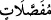
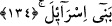

Fakat ne çare ki emerken yapraktaki ıslaklık da hemen taze veya acı bir kan oluyordu.
Firavun ve ona tâbî olanlar, yedi gün kandan başka bir şey yiyip içemediler. Firavun
dedi ki: “Senin ilâhına yemin ederim ki ey Mûsâ, eğer şu kan musibetini başımızdan
kaldırırsan muhakkak sana inanacağız.” Mûsâ (a.s.) dua etti sular eski halini aldı,
tatlılaşıp berraklaştı. Fakat onlar tekrar küfre döndüler ve boğuluncaya kadar böylece
devam ettiler.
Ayette geçen “__WORD__” kelimesinin mânâsı şöyledir: Yani tufan, çekirge, kene ve kan
gibi mucizeleri, apaçık alamet ve mucizeler olarak gönderdik. Bunların Allah’ın
ayetleri ve cezaları olduğunda hiç bir akıllı kimse şüphe etmez. “__WORD__” kelimesinin
“ayrı ayrı, farklı farklı” mânâsında olduğu da söylenmiştir. Yani Allah Teâlâ, Firavun ve
kavmi ibret mi alacaklar, yoksa inat ve muhalefetlerine devam mı edecekler diye onları
imtihan etmek için bu musibetleri belirli zaman aralıklarıyla ayrı ayrı göndermiştir.
Musibetlerden herbiri birer ay aralıklarla gelmiş ve birer hafta sürmüştür.
“Ama yine büyüklük tasladılar” inanmaya tenezzül etmediler “ve günahkâr bir
topluluk oldular.” Mücrim topluluk, yani küfürde inat edenler, ayetlerin tezahür etmesi
ve birbiri ardına gelmesine rağmen iman etmediler.
134. Azap üzerlerine çökünce, “Ey Musa! sana verdiği söz hürmetine, bizim için
Rabbine dua et; eğer bizden azabı kaldırırsan, mutlaka sana inanacağız ve
muhakkak İsrailoğullarını seninle göndereceğiz” dediler.
“Üzerlerine azab çökünce” Firavun ve kavminin başına tûfan ve diğer musibetlerden
herbiri ceza olarak geldikçe onlar her defasında “dediler ki: “Ey Mûsâ, sana verdiği
söz” yani peygamberlik “hürmetine bizim için Rabb’ine duâ et;” Yani sahip olduğun
Allah’ın ahdi -ki o peygamberliktir- hakkına bizden azabı kaldırması için Rabb’ine duâ
et. Çünkü, peygamberliğin hakkı ve gereği, peygamberin ümmetinin başına gelen bela ve
sıkıntıların def’i için dua etmesidir.
Peygamberliğe “ahid” denilmesi, hakkında Allah tarafından ahid alındığını mübâlağa
ile bildirmek içindir. Çünkü Allah Teâlâ peygamber olarak gönderdiğinde ona,
peygamberliğin sıkıntılarına tahammül etmeyi ve tebliğ hususunda verilen sözde
durmayı emretmiştir. Peygamberlik, Allah’ın emrettiği ve hakkında ahid aldığı bir şey
kılınmıştır. Hakkında ahid alınan bir şey olduğunu mübâlağa ile bildirmek için de ahdin
kendisi yerine konmuştur.
Farsça tefsirde şöyle denilmektedir: “sana verdiği söz hürmetine” Ahdettiği şey